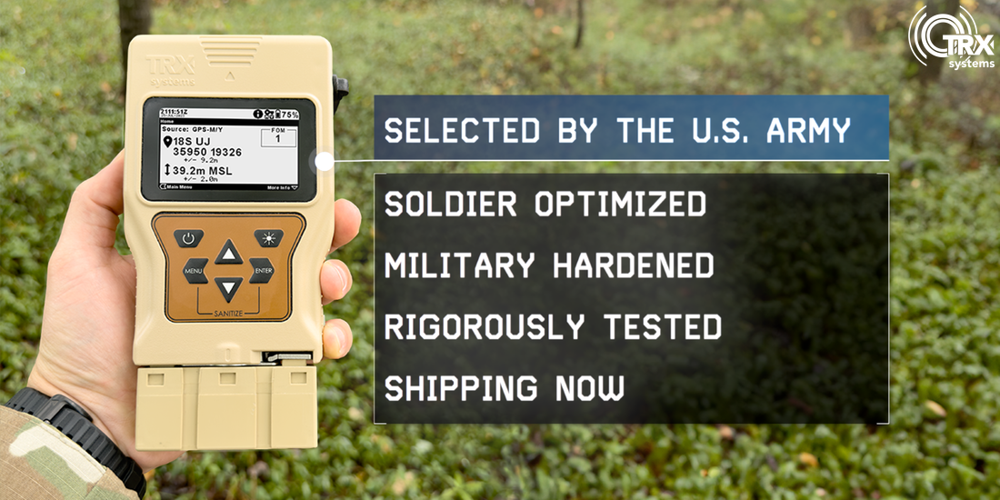
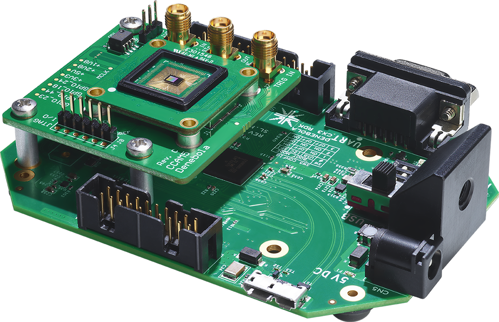
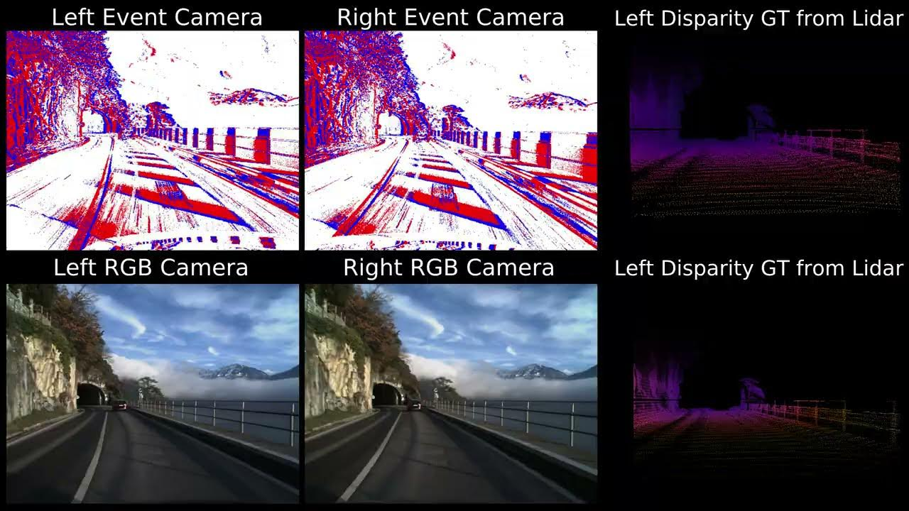

Summer 2025

TRX Systems DAPS, the U.S. Army's handheld Position, Navigation, and Timing tool.

A model of event-based sensing. Unlike frame-based cameras, event cameras capture relative light intensity, not complete images.

The GenX320 Event Camera and EVK3 test board.

A sample dataset from a paper I investigated. Unfortunately I am unable to present any direct samples of my work.
❮
❯
DESCRIPTION: I worked at TRX Systems during the Summer of 2025 as their Software Engineering Intern. I worked with several computing and sensing technologies, but my primary objective was using an Event-Based Camera for pose estimation, particularly in the context of GPS-denied/emission-free sensing for vehicle movement in low-light scenarios.
My initial prototypes resembled a computer mouse (using similar xy-translation principles), but the demands of the challenge and field-testing required developing more sophisticated algorithms and physical testbenches, ultimately succeeding at generating speed estimations during road testing.
TOOLS: Python, Linux, CAD, C++, Prophesee GenX320, MicroPython
LINKS: Event Sensing Survey Paper